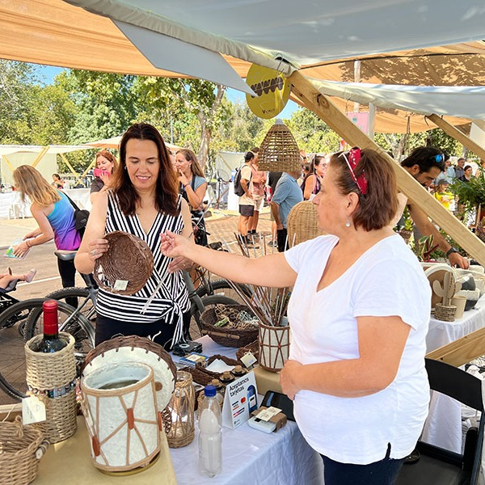
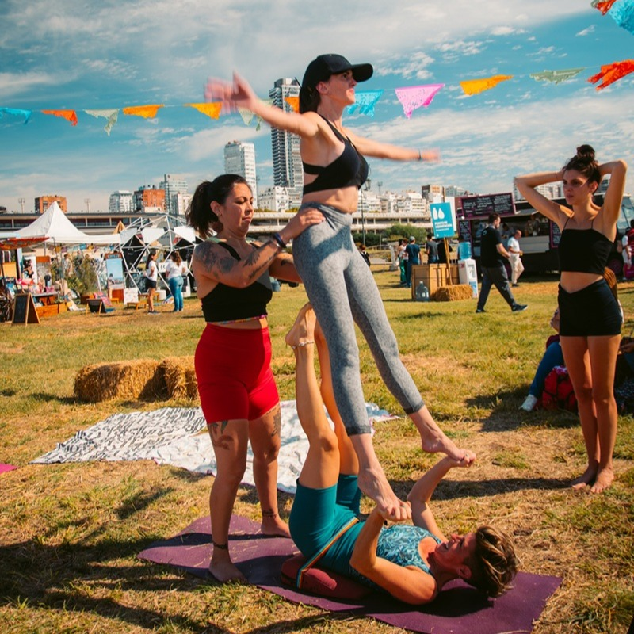
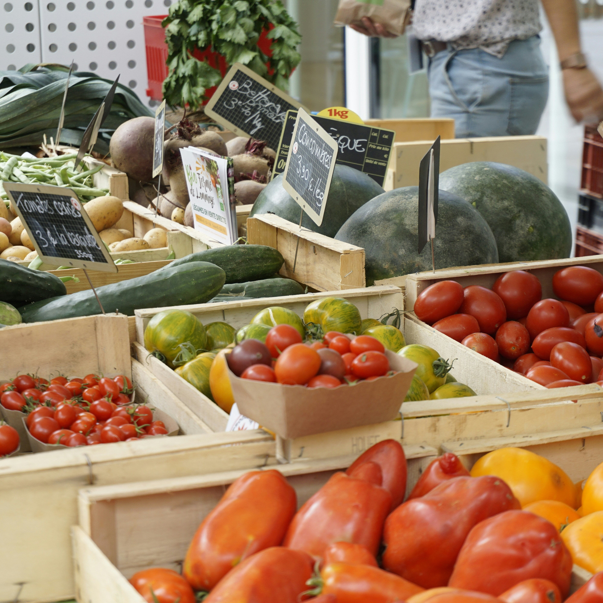
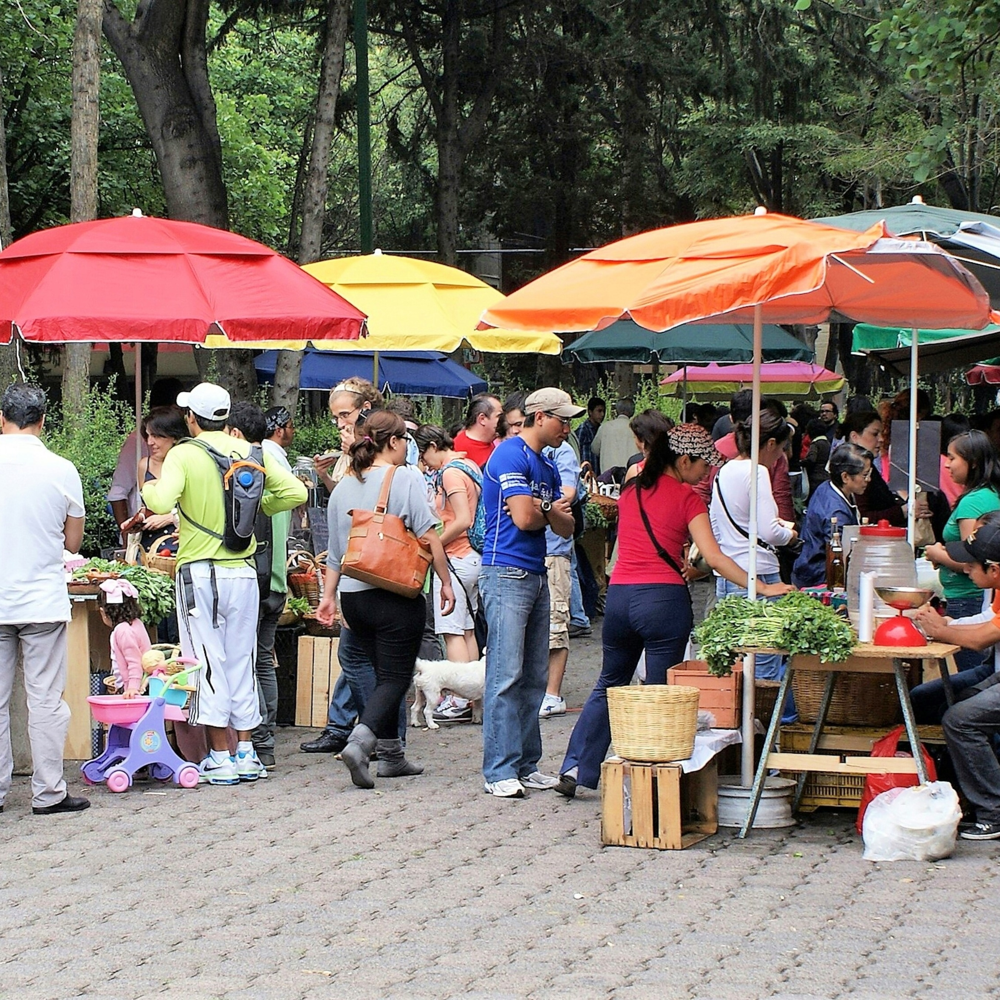
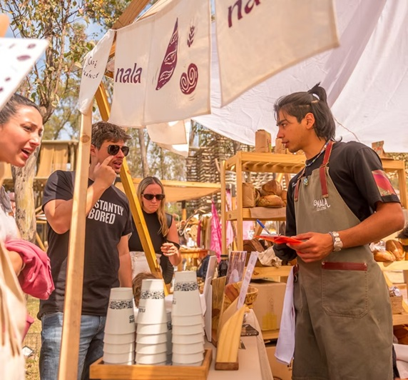
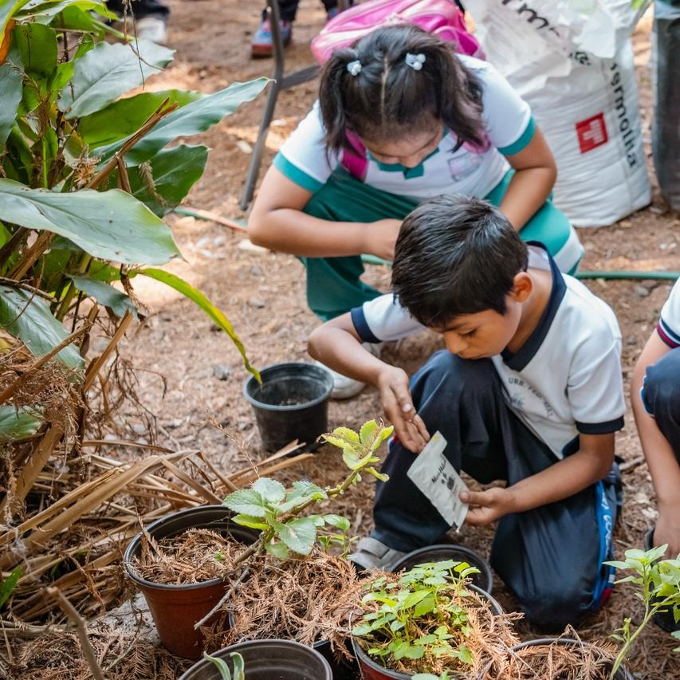
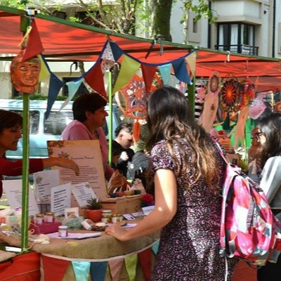
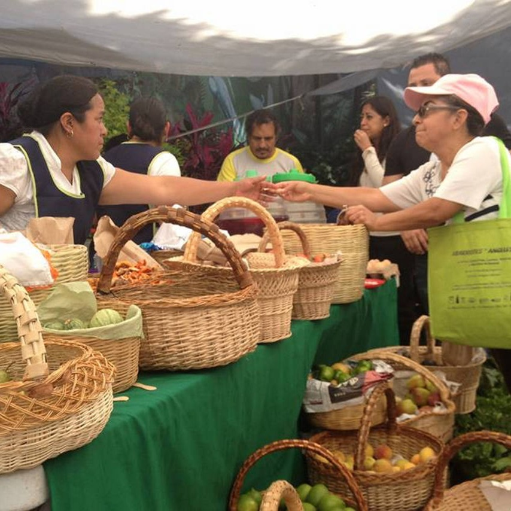
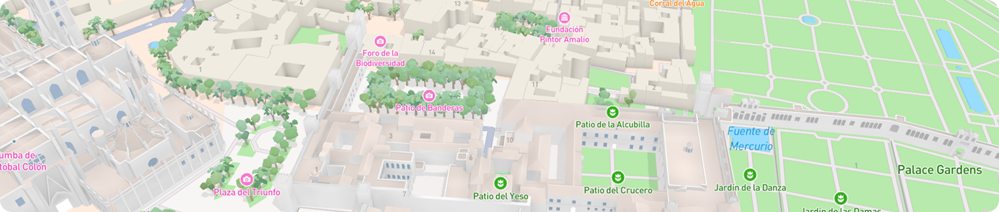

Nuestro Recorrido
De ciudad en ciudad, sembrando conciencia
Desde nuestros inicios, miles de personas ya fueron parte de esta feria en diferentes puntos de la provincia. Nos emociona compartir con vos lo vivido. Mirá la galería de fotos y reviví momentos únicos llenos de color, aprendizaje y comunidad.

Mar del Plata

Ciudad de Buenos Aires

La Plata

Tigre

Luján
Lanús

Quilmes

San Isidro
Necochea

Berazategui
Próximos destinos
¿Querés saber cuándo llegamos a tu ciudad? Consultá el calendario de fechas y preparate para una experiencia diferente.
1 y 2 Junio
Avellaneda
9:30 a 21:30
3 y 4 Junio
Banfield
9:30 a 21:30
5 y 6 Junio
Adrogué
9:30 a 21:30
1 y 2 Julio
Temperley
9:30 a 21:30
3 y 4 Julio
Hurlingham
9:30 a 21:30
5 y 6 Julio
Castelar
9:30 a 21:30
